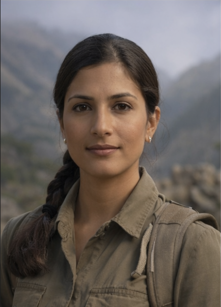
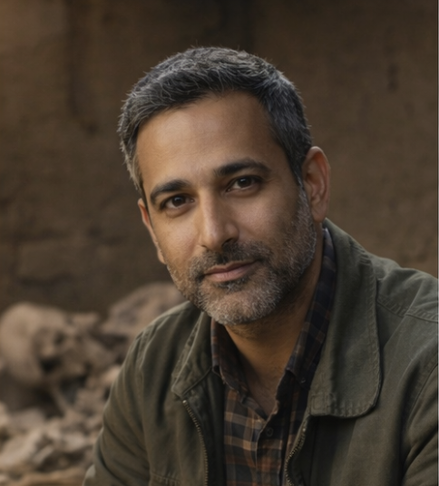
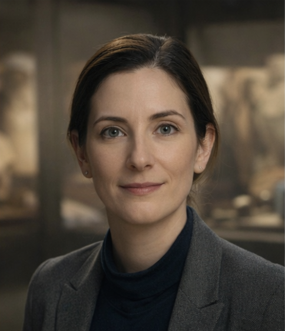

Museum of Cultural Memory

Dr. Isla Raman
Archaeologist. Specializes in ritual tools and mountain sanctuaries. Holder of 3 Fulbright fellowships...

Dr. Raj Malik
Anthropologist. Studies burial customs and symbolic storytelling in oral traditions...

Dr. Isla Raman
Subject Matter Expertise:
Archaeologist specializing in ritual tools, ceremonial architecture,
and high-altitude mountain sanctuaries.
Professional Bio:
Dr. Isla Raman received her Ph.D. in Archaeology from the University of Cambridge,
focusing on ritual material culture in mountainous regions.
She has led international excavations across Central Asia and the Andean highlands.
Her work combines traditional stratigraphic methods with drone mapping and
3D artifact scanning technologies.
Dr. Raman is known for her meticulous field documentation and interdisciplinary approach.
Her research explores the relationship between sacred landscapes, belief systems,
and material culture.
Museum Role:
At the Museum of Cultural Memory, Dr. Raman oversees artifact acquisition related
to ritual practices and curates exhibitions focused on sacred spaces and ceremonial technologies.
Special Considerations:
Dr. Raman is a three-time Fulbright Fellow and a strong advocate for ethical excavation
practices and respectful collaboration with local communities in remote regions.